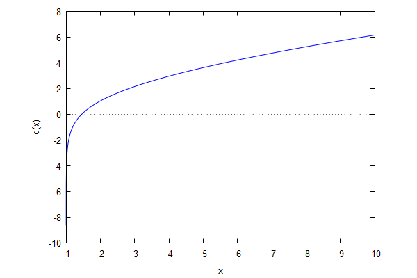
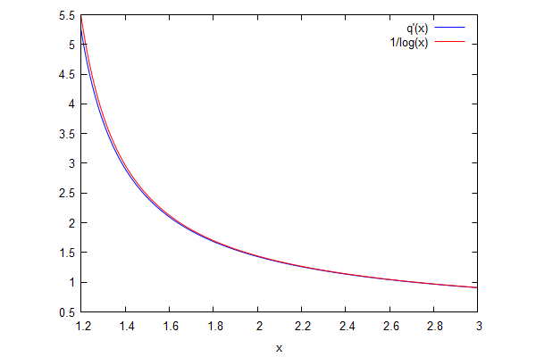
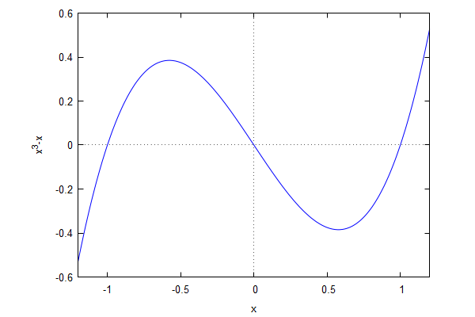
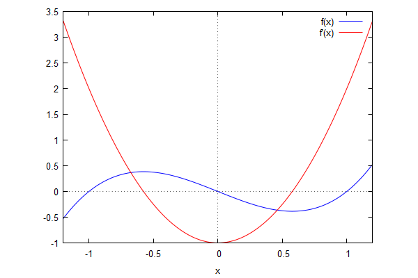
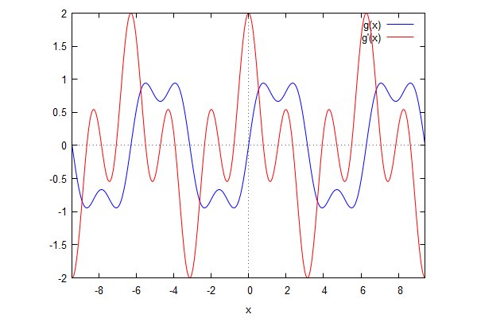
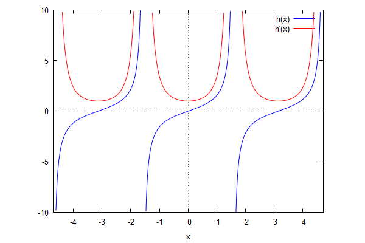
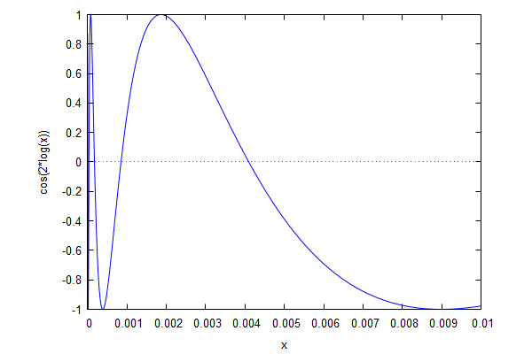
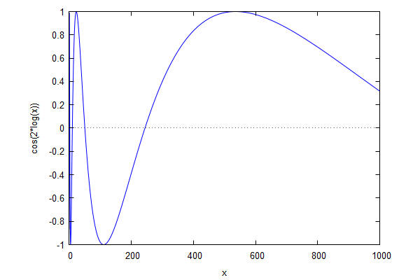
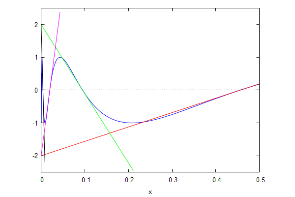

\( \DeclareMathOperator{\abs}{abs} \newcommand{\ensuremath}[1]{\mbox{$#1$}} \)
Lab sheet 5
| --> | q ( x ) : = %gamma + log ( log ( x ) ) + log ( x ) · hypergeometric ( [ 1 , 1 ] , [ 2 , 2 ] , log ( x ) ) ; |
\[\operatorname{ }\operatorname{q}(x):=\gamma +\log{\left( \log{(x)}\right) }+\log{(x)} \operatorname{hypergeometric}\left( [1,1],[2,2],\log{(x)}\right) \]
| --> | wxplot2d ( q ( x ) , [ x , 1 . 0001 , 10 ] , [ ylabel , "q(x)" ] ) ; |
\[\operatorname{ }\]

\[\operatorname{ }\]
| --> | Q ( x , h ) : = ( q ( x + h ) − q ( x ) ) / h ; |
\[\operatorname{ }\operatorname{Q}\left( x,h\right) :=\frac{\operatorname{q}\left( x+h\right) -\operatorname{q}(x)}{h}\]
| --> | fpprec : 30 ; |
\[\operatorname{(fpprec) }30\]
| --> |
ev
(
Q
(
exp
(
2
)
,
0
.
01
)
,
numer
)
;
ev ( Q ( exp ( − 2 ) , 0 . 01 ) , numer ) ; ev ( Q ( exp ( 4 ) , 0 . 01 ) , numer ) ; |
\[\operatorname{ }0.4998309833585068\]
\[\operatorname{ }-0.5092383621293717\]
\[\operatorname{ }0.2499942768867669\]
| --> | wxplot2d ( [ Q ( x , 0 . 02 ) , 1 / log ( x ) ] , [ x , 1 . 2 , 3 ] , [ legend , "q'(x)" , "1/log(x)" ] ) ; |
\[\operatorname{ }\]

\[\operatorname{ }\]
| --> | kill ( q , Q ) $ |
| --> | f ( x ) : = x ^ 3 − x ; |
\[\operatorname{ }\operatorname{f}(x):={{x}^{3}}-x\]
| --> | wxplot2d ( f ( x ) , [ x , − 1 . 2 , 1 . 2 ] ) ; |
\[\operatorname{ }\]

\[\operatorname{ }\]
| --> | solve ( f ( x ) , x ) ; |
\[\operatorname{ }[x=-1,x=1,x=0]\]
| --> | df0 : diff ( f ( x ) , x ) $ df ( x ) : = ' ' df0 ; |
\[\operatorname{ }\operatorname{df}(x):=3 {{x}^{2}}-1\]
| --> | solve ( df ( x ) , x ) ; |
\[\operatorname{ }[x=-\frac{1}{\sqrt{3}},x=\frac{1}{\sqrt{3}}]\]
| --> | wxplot2d ( [ f ( x ) , df ( x ) ] , [ x , − 1 . 2 , 1 . 2 ] , [ legend , "f(x)" , "f'(x)" ] ) ; |
\[\operatorname{ }\]

\[\operatorname{ }\]
| --> |
g
(
x
)
:
=
sin
(
x
)
+
sin
(
3
·
x
)
/
3
;
dg0 : diff ( g ( x ) , x ) $ dg ( x ) : = ' ' dg0 ; |
\[\operatorname{ }\operatorname{g}(x):=\sin{(x)}+\frac{\sin{\left( 3 x\right) }}{3}\]
\[\operatorname{ }\operatorname{dg}(x):=\cos{\left( 3 x\right) }+\cos{(x)}\]
| --> | wxplot2d ( [ g ( x ) , dg ( x ) ] , [ x , − 3 · %pi , 3 · %pi ] , [ legend , "g(x)" , "g'(x)" ] ) ; |
\[\operatorname{ }\]

\[\operatorname{ }\]
| --> |
h
(
x
)
:
=
tan
(
x
)
;
dh0 : diff ( h ( x ) , x ) $ dh ( x ) : = ' ' dh0 ; |
\[\operatorname{ }\operatorname{h}(x):=\tan{(x)}\]
\[\operatorname{ }\operatorname{dh}(x):={{\sec{(x)}}^{2}}\]
| --> | wxplot2d ( [ h ( x ) , dh ( x ) ] , [ x , − 3 / 2 · %pi , 3 / 2 · %pi ] , [ y , − 10 , 10 ] , [ legend , "h(x)" , "h'(x)" ] ) ; |
\[\]\[plot2d: some values were clipped. \]\[plot2d: some values were clipped.\]
\[\operatorname{ }\]

\[\operatorname{ }\]
| --> | kill ( f , df0 , df , g , dg0 , dg , h , dh0 , dh ) $ |
| --> | S ( y ) : = diff ( y , x , 3 ) / diff ( y , x ) − 3 / 2 · ( diff ( y , x , 2 ) / diff ( y , x ) ) ^ 2 ; |
\[\operatorname{ }\operatorname{S}(y):=\frac{\frac{{{d}^{3}}}{d {{x}^{3}}} y}{\frac{d}{d x} y}-\frac{3}{2} {{\left( \frac{\frac{{{d}^{2}}}{d {{x}^{2}}} y}{\frac{d}{d x} y}\right) }^{2}}\]
| --> | factor ( S ( x ^ n ) ) ; |
\[\operatorname{ }-\frac{\left( n-1\right) \, \left( n+1\right) }{2 {{x}^{2}}}\]
| --> | factor ( S ( ( a · x + b ) / ( c · x + d ) ) ) ; |
\[\operatorname{ }0\]
| --> | factor ( S ( ( a · p ^ x + b ) / ( c · p ^ x + d ) ) ) ; |
\[\operatorname{ }-\frac{{{\log{(p)}}^{2}}}{2}\]
| --> | T ( u ) : = sqrt ( diff ( u , x ) ) · diff ( 1 / sqrt ( diff ( u , x ) ) , x , 2 ) ; |
\[\operatorname{ }\operatorname{T}(u):=\sqrt{\frac{d}{d x} u} \left( \frac{{{d}^{2}}}{d {{x}^{2}}} \frac{1}{\sqrt{\frac{d}{d x} u}}\right) \]
| --> | TS ( u ) : = factor ( T ( u ) / S ( u ) ) ; |
\[\operatorname{ }\operatorname{TS}(u):=\operatorname{factor}\left( \frac{\operatorname{T}(u)}{\operatorname{S}(u)}\right) \]
| --> | TS ( x ^ n ) ; |
\[\operatorname{ }-\frac{1}{2}\]
| --> | TS ( sin ( x ) ^ 2 ) ; |
\[\operatorname{ }-\frac{1}{2}\]
| --> | TS ( exp ( x ) ) ; |
\[\operatorname{ }-\frac{1}{2}\]
| --> | TS ( u ( x ) ) ; |
\[\operatorname{ }-\frac{1}{2}\]
| --> | kill ( S , T , TS ) $ |
| --> | f ( x ) : = cos ( − 2 · log ( x ) ) ; |
\[\operatorname{ }\operatorname{f}(x):=\cos{\left( \left( -2\right) \log{(x)}\right) }\]
| --> | wxplot2d ( f ( x ) , [ x , 0 , 0 . 01 ] ) ; |
\[\]\[plot2d: expression evaluates to non-numeric value somewhere in plotting range.\]
\[\operatorname{ }\]

\[\operatorname{ }\]
| --> | wxplot2d ( y , [ x , 0 , 1000 ] ) ; |
\[\]\[plot2d: expression evaluates to non-numeric value somewhere in plotting range.\]
\[\operatorname{ }\]

\[\operatorname{ }\]
| --> |
a0
:
exp
(
−
%pi
/
4
)
$
m0
:
subst
(
x
=
a0
,
diff
(
f
(
x
)
,
x
)
)
$
a1 : exp ( − 3 · %pi / 4 ) $ m1 : subst ( x = a1 , diff ( f ( x ) , x ) ) $ a2 : exp ( − 5 · %pi / 4 ) $ m2 : subst ( x = a2 , diff ( f ( x ) , x ) ) $ a3 : exp ( − 7 · %pi / 4 ) $ m3 : subst ( x = a3 , diff ( f ( x ) , x ) ) $ |
| --> | wxplot2d ( [ f ( x ) , m0 · ( x − a0 ) , m1 · ( x − a1 ) , m2 · ( x − a2 ) , m3 · ( x − a3 ) ] , [ x , 0 , 0 . 5 ] , [ y , − 2 . 5 , 2 . 5 ] , [ legend , false ] ) ; |
\[\]\[plot2d: expression evaluates to non-numeric value somewhere in plotting range. \]\[plot2d: some values were clipped. \]\[plot2d: some values were clipped. \]\[plot2d: some values were clipped.\]
\[\operatorname{ }\]

\[\operatorname{ }\]
Created with wxMaxima.
The source of this Maxima session can be downloaded here.